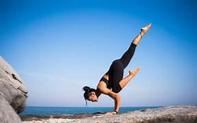
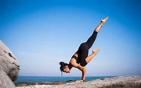

Yoga is a holistic practice that originated in ancient India and has evolved over thousands of years.
It combines physical postures (asanas), breath control (pranayama), meditation, and ethical principles to promote overall well-being.
Here are key aspects of yoga:
 

Information about Yoga
Taking care of your mental health involves a multifaceted approach that encompasses various aspects of your daily life. Prioritize self-care by developing a routine that caters to your emotional, physical, and mental needs, incorporating activities that bring you joy and relaxation. Establishing a consistent daily schedule provides a sense of structure and stability. Stay connected with friends and family, fostering meaningful relationships and a sense of belonging. If you're facing persistent mental health challenges, consider seeking professional help from a therapist or counselor who can provide tailored support and coping strategies.- Physical Aspects (Asanas):
- Postures: Yoga poses, or asanas, are designed to enhance flexibility, strength, and balance.
- Flow: Vinyasa or flow yoga involves moving through a series of poses in a continuous, rhythmic manner.
- Styles: Various styles include Hatha, Vinyasa, Ashtanga, Iyengar, and Kundalini, each with its unique emphasis and approach.
- Breath Control (Pranayama):
- Conscious Breathing: Pranayama involves breath awareness and control, enhancing respiratory function and calming the nervous system.
- Techniques: Examples include deep diaphragmatic breathing, alternate nostril breathing (Nadi Shodhana), and breath retention (Kumbhaka).
- Meditation and Mindfulness:
- Dhyana (Meditation): Yoga incorporates meditation practices to cultivate mindfulness, focus, and inner calm.
- Mindfulness: Awareness of the present moment is emphasized, helping individuals develop mental clarity and reduce stress.
- Philosophical Principles:
- Yamas and Niyamas: Ethical guidelines that include principles like non-violence (ahimsa), truthfulness (satya), contentment (santosha), and self-discipline (tapas).
- Eight Limbs of Yoga: Described in the Yoga Sutras by Patanjali, these include ethical principles, physical postures, breath control, sense withdrawal, concentration, meditation, and enlightenment.
- Health Benefits:
- Physical Health: Improved flexibility, strength, balance, and cardiovascular health.
- Mental Health: Reduced stress, anxiety, and depression. Enhanced focus, concentration, and overall mental well-being.
- Chronic Conditions: Yoga is used as a complementary therapy for conditions like back pain, arthritis, and respiratory disorders.
- Accessibility:
- Yoga is adaptable and can be practiced by people of all ages and fitness levels.
- Modifications and props (blocks, straps) make it accessible for individuals with varying abilities and limitations.
- Community and Support:
- Yoga studios, classes, and online communities provide a supportive environment for practitioners.
- Yoga retreats and workshops offer opportunities for immersive experiences and deeper learning.
- Mind-Body Connection:
- Yoga emphasizes the interconnectedness of the mind and body.
- Practices like body scanning and mindful movement enhance awareness of bodily sensations.